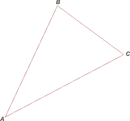
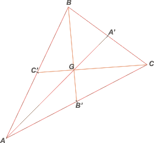
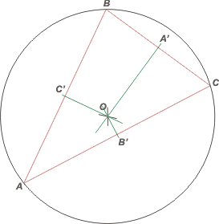

NO ME SALEN
EJERCICIOS RESUELTOS Y APUNTES DE FÍSICA Y BIOFÍSICA DEL CBC
Puntos notables de un triángulo
Se llaman puntos notables de un triángulo a los cuatro siguientes: el ortocentro, H; el baricentro, G; el circuncentro, O; y el incentro, I. |
|

|
|  |
Sea el ABC un triángulo cualquiera. No necesita ser isósceles ni rectángulo ni tener ninguna propiedad especial.
Para remarcar esa independencia de la forma lo dibujamos escaleno, o sea, sus tres lados desiguales. También sus tres ángulos interiores serán desiguales.
Dibujemos sus puntos notables: |
|
|
Pasemos al baricentro, G. Se trata del punto de intersección de las 3 medianas. |
|
|  |
La mediana es la recta que pasa por un vértice y el punto medio del lado opuesto. hallemos los puntos medios de cada lado. C' es el punto medio del lado AB. Y así sucesivamente.
Las 3 medianas se cortan en un punto y ese el el baricentro.
El nombre obedece a lo siguiente: si se tratase de un triángulo material, el baricentro es su centro de masa. Si construyeses un triángulo de cartón o de chapa y lo clavás a la pared con un clavo justo en el baricentro, quedaría en un equilibrio indiferente. |
|
|
Empecemos con el circuncentro, O. Se trata de la intersección de las 3 mediatrices de los 3 lados. |
|
|  |
La mediatriz de un segmento es la recta ortogonal al segmento que pasa por el punto medio.
Entonces hallemos los puntos medios de los lados. C' es el punto medio del lado AB. Y así sucesivamente.
Por cada punto medio trazamos la recta perpendicular al lado correspondiente. Esas rectas son las mediatrices.
Las 3 mediatrices se cortarán en un punto y ese punto se denomina Circuncentro.
Se llama así porque es el centro de una circunferencia (es única para cada triángulo) que contiene a los 3 vértices del triángulo. |
|
|
La circunferencia recibe nombre: circunferencia circunscrita.
Pasemos al ortocentro, H. Es el punto en el que se cortan las 3 alturas. |
|
 |
La altura es la recta perpendicular a cada lado que pasa por el vértice opuesto a cada lado.
(También se lllama altura al segmento perpendicular a cada lado con extremos en el lado y en el vértice opuesto al lado). |
|
|
| El turno del incentro, I. Se trata de la intersección de las 3 bisectrices de los 3 ángulos interiores del triángulo. |
|
 |
Las bisectrices son las rectas que pasan por los vértices y dividen al ángulo interior en dos ángulos iguales.
El incentro es el centro de una circunferencia que puede inscribirse dentro del triángulo, es decir, que es tangente a los 3 lados.
Recibe el nombre de circunferencia inscrita y es la mayor circunferencia que puede colocarse dentro del triángulo. |
|
|
| Relación entre los puntos notables de un triángulo. Recta de Euler. |
|
 |
El circuncentro, el baricentro y el ortocentro se hallan siempre alinados. La recta a la que pertenecen se llama recta de Euler.
Y además se cumple que el baricentro se halla en el medio de los otros dos, a una distacia doble del ortocentro que del circuncentro: GH = 2 OG.
El baricentro y el incentro siempre son interiores al triángulo. En cambio el ortocentro y el circuncentro pueden ser exteriores. |
|
|
En esta página podés jugar a localizar los puntos notables mientras le cambiás la forma al triángulo.
Desafío: ¿Se puede demostrar que las 3 alturas se cortan en un punto? ¿Y las 3 medianas? ¿Y las 3 mediatrices? ¿Y las 3 bisectrices? |
 |
| Algunos derechos reservados.
Se permite su reproducción citando la fuente. Última actualización oct-14. Buenos Aires, Argentina. |
|
| | | | |
| | | | |
| | | | |
|